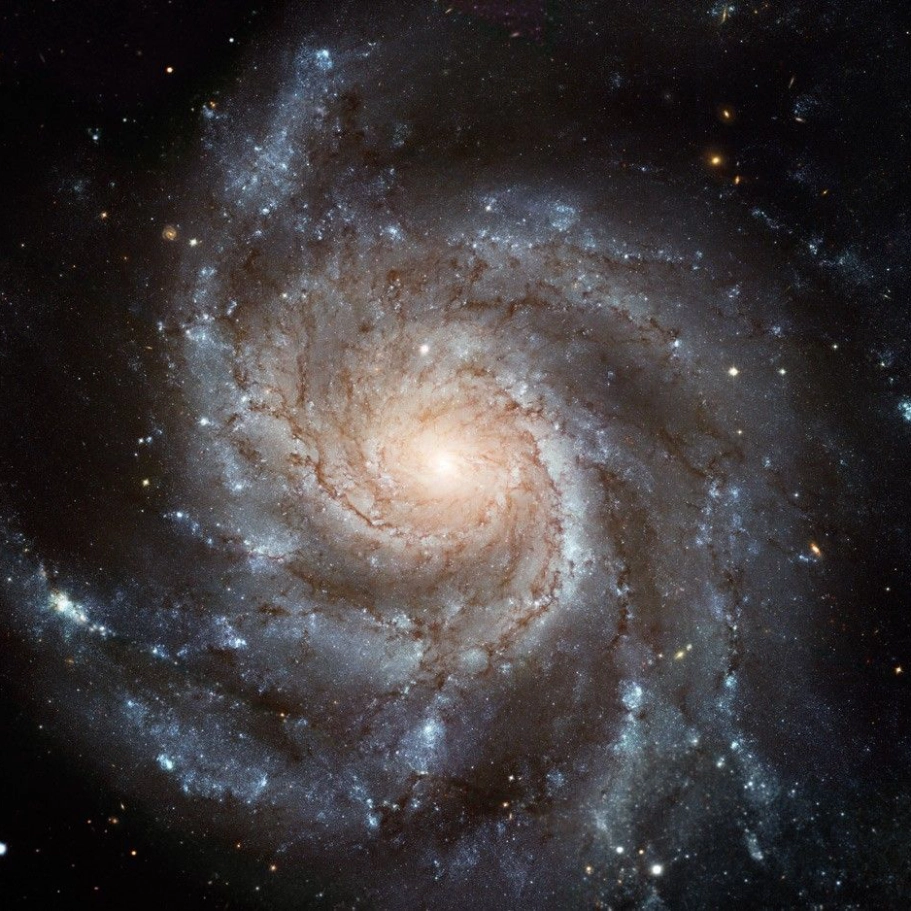

= 90rem) 25.75rem, (width >= 61.25rem) 12.875rem, calc(100vw - 4rem)" >Spiral
Our Milky Way is one example of a broad class of galaxies defined by the presence of spiral arms. These galaxies resemble giant rotating pinwheels with a pancake-like disk of stars and a central bulge or tight concentration of stars.
The spiral arms can be wound tightly or loosely, and some cannot be seen from Earth because we view the galaxy from the side, edge on.
The spiral arms can be wound tightly or loosely, and some cannot be seen from Earth because we view the galaxy from the side, edge on.
Spiral galaxies are surrounded by halos, mixtures of old stars, star clusters, and dark matter – invisible material that does not emit or reflect light but still has a gravitational pull on other matter. The youngest stars form in gas-rich arms, while older stars can be found throughout the disk and within the bulge and halo.